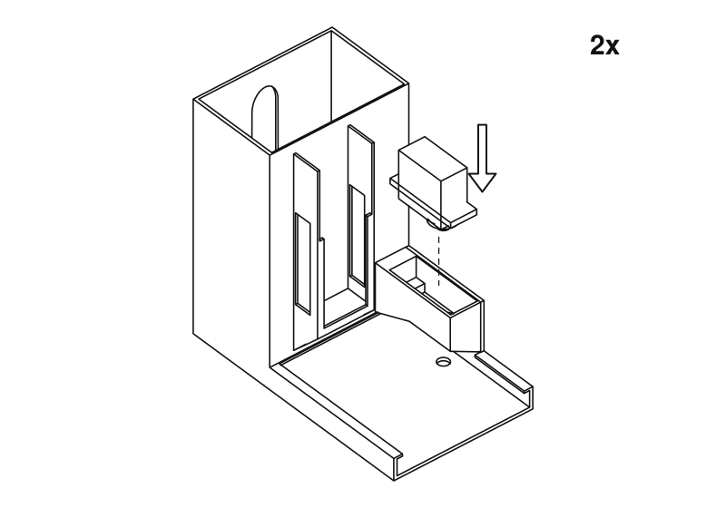
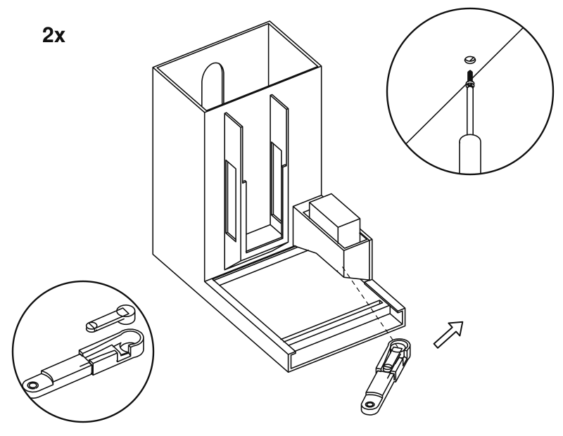

Spenser - a developer's companion, publié par José Costa Teixeira. Ce guide n'est pas une publication autorisée ; C'est la version en intégration continue pour la version 1.0.0 construite par le CI Build FHIR (HL7® FHIR® Standard). Cette version est basée sur le contenu actuel de https://github.com/costateixeira/spenser/tree/master et change régulièrement. Voir le répertoire des versions publiées Built from commit 32957deb.
Assemblage
Cette page comprend des traductions de la langue source originale dans laquelle le guide a été rédigé. Des informations sur ces traductions et des instructions sur la manière de fournir un retour d'information sur les traductions sont disponibles ici.
Deux couloirs, un pour le chocolat noir et un pour le chocolat au lait. Tout ce qui
est marqué 2x se fait une fois par couloir.
Ces dessins ont été réalisés à partir des modèles 3D des pièces, et non photographiés
sur une unité terminée. Si quelque chose ici ne correspond pas à ce que vous avez en
main, merci de nous le signaler.
Vérifiez que vous avez tout. Les palonniers et les vis sont fournis avec les servos, et il vous faut aussi un câble USB-C. Un morceau de chocolat ne doit pas dépasser 60 × 39 mm et doit faire entre 5,5 et 7,5 mm d'épaisseur.1

Descendez le servo dans le boîtier, arbre vers le bas, jusqu'à ce que ses oreilles reposent sur le rebord. L'arbre pointe vers le plateau.2Fixez-le avec deux vis passées dans les oreilles. Serrez juste ce qu'il faut, sans forcer : elles entrent dans du plastique.3Enfoncez l'Atom sur l'extrémité de la base Atomic Motion opposée à la batterie.4Faites glisser la base vers le bas dans la baie à l'avant d'une tour, côté batterie en premier, de sorte que l'Atom se retrouve en haut. La batterie et le bouton de l'Atom sont tournés vers le plateau, et les connecteurs des servos du côté du servo. Un seul corps en a besoin.5Placez les corps côte à côte. Enfoncez la fiche du servo du couloir chocolat noir sur le connecteur marqué S4 et celle du couloir chocolat au lait sur S3, que le micrologiciel appelle canaux 3 et 2. Le fil marron est la masse : alignez-le sur la marque de masse à côté du connecteur. Un autre choix peut être réglé sur le tableau de bord.6Branchez la batterie externe sur le port USB-C situé au-dessus de l'Atom et allumez la base. Ouvrez le tableau de bord et appuyez sur Move both to rest. Ne tournez plus les servos à la main à partir de maintenant. La batterie de la base se recharge par le même câble.7Engagez le poussoir dans la glissière par l'avant, nervures vers le bas et longue fente vers vous.8

Enfoncez un palonnier dans la rainure du bras. Glissez le bras sous le boîtier et sur l'arbre, puis fixez-le avec la vis du palonnier, par le trou situé sous le corps.8Au repos, le bras pointe vers l'avant et le poussoir laisse le fond de la tour dégagé. Sinon, retirez le bras et remettez-le sur l'arbre dans la bonne position.9Laissez tomber la goupille à travers le bras et dans la fente, tête vers le haut. Elle doit coulisser librement le long de la fente. Si elle coince, limez un peu la fente pour l'élargir.10Tour encore vide, appuyez sur Test dark cycle et Test milk cycle sur le tableau de bord. Le poussoir doit passer par la fente à l'arrière, puis revenir. C'est par ici que sort le chocolat : laissez la place pour une tasse.11Empilez le chocolat à plat par le haut de la tour. La fenêtre à l'arrière montre ce qu'il reste. Indiquez à l'unité combien vous en avez chargé, sur le tableau de bord.C'est fini. Maintenant, déposez une ordonnance.
Ces dessins sont générés à partir des mêmes fichiers STL que ceux que vous imprimez.
Pour en modifier un, éditez tools/assembly/build.py dans le dépôt source et
relancez-le.